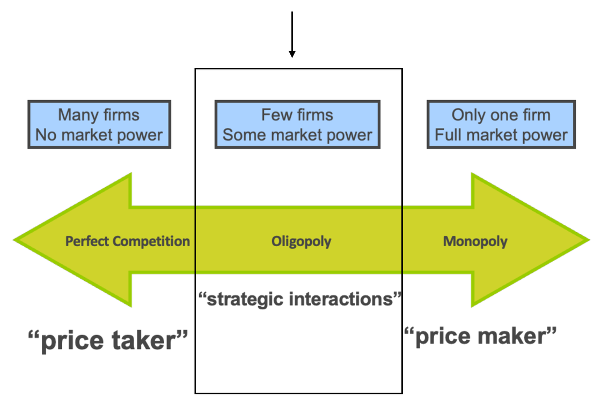
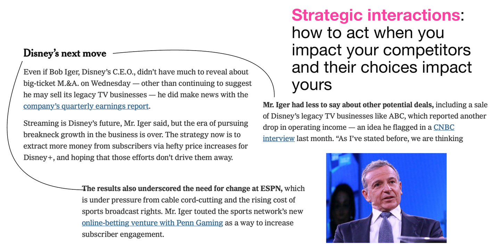
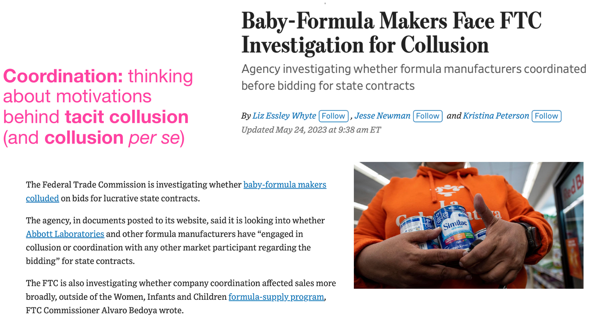
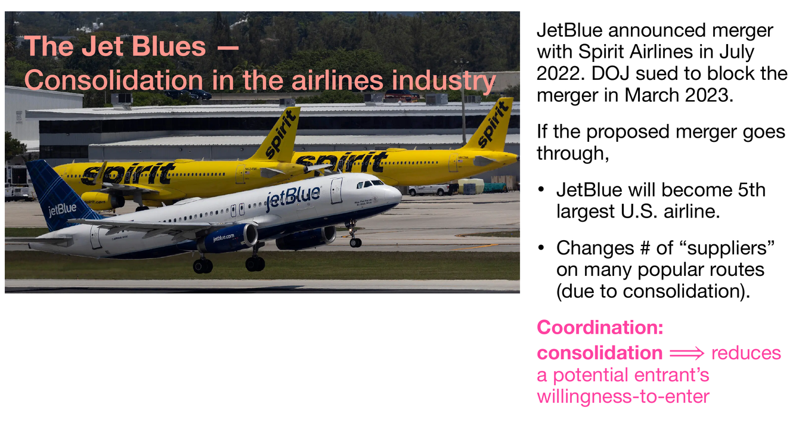
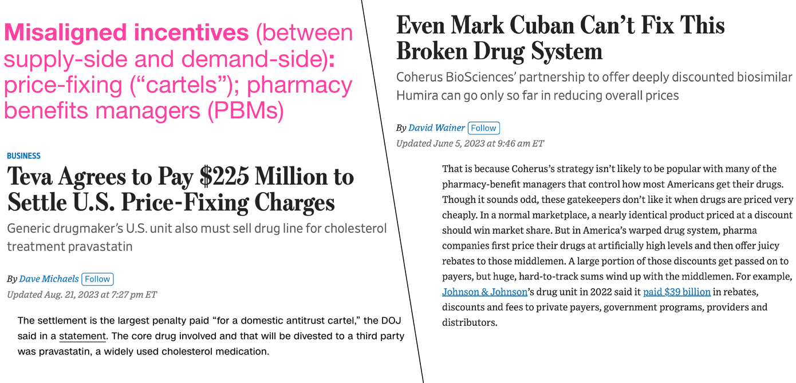

RSC Economics Experience · July 2026
Meng Hsuan “Rex” Hsieh
Press → to begin
Agenda for Today
Part 1
Press ↓ to continue
Markets & Competition · Recap

Motivations · 1/4

Strategic interactions: how to act when you impact your competitors and their choices impact yours.
Motivations · 2/4

Coordination: thinking about motivations behind tacit collusion (and collusion per se).
Motivations · 3/4

Coordination: consolidation reduces a potential entrant’s willingness-to-enter.
Motivations · 4/4

Misaligned incentives (between supply-side and demand-side): price-fixing (“cartels”); pharmacy benefits managers (PBMs).
Part 2 of the Course
Each scenario above can be viewed as a game! We will:
Part 2
Press ↓ to continue
Preliminary Definitions · Players (1/5)
(Yes, even the weather can be a player — we’ll see this shortly!)
Preliminary Definitions · Actions (2/5)
Each player’s actions come with rewards (positive payoff) or “punishment” (negative payoff).
Preliminary Definitions · Strategies (3/5)
Each player is rational (enough) to have contingency plans.
Preliminary Definitions · Payoffs (4/5)
| Rex (Player 2) | |||
| Bring Umbrella (B) | Don’t Bring Umbrella (D) | ||
|---|---|---|---|
| Nature (Player 1) | Rain (R) | 2, 4 | 3, 2 |
| No Rain (N) | 2.5, 1.5 | 3.5, 0 | |
In each cell: Player 1’s payoff first, Player 2’s payoff second — e.g. “3, 2” means Nature gets 3 and Rex gets 2.
Preliminary Definitions · Rules (5/5)
Players, actions, strategies, payoffs give the basic structure of a game. We still need rules.
Question 1: What does an equilibrium look like in Rex’s game with Nature (in simultaneous-move, one-shot games)?
Part 3
Press ↓ to continue
Equilibrium Concepts · Dominance (1/11)
First answer to Question 1: imagine everyone has a strategy that gives the highest possible payoff, regardless of what anyone else does. This is the idea of dominance.
In Rex’s game with Nature, do the players have dominant strategies?
Equilibrium Concepts · Dominance (2/11)
| Rex (Player 2) | |||
| Bring Umbrella (B) | Don’t Bring Umbrella (D) | ||
|---|---|---|---|
| Nature (Player 1) | Rain (R) | 2, 4 | 3, 2 |
| No Rain (N) | 2.5, 1.5 | 3.5, 0 | |
Equilibrium Concepts · Answer
In Rex’s game with Nature, do the players have dominant strategies? Yes!
| Rex (Player 2) | |||
| Bring Umbrella (B) | Don’t Bring Umbrella (D) | ||
|---|---|---|---|
| Nature (Player 1) | Rain (R) | 2, 4 | 3, 2 |
| No Rain (N) | 2.5, 1.5 | 3.5, 0 | |
Equilibrium Concepts · DSE (3/11)
In Rex’s game with Nature, the DSE is (No Rain, Bring Umbrella) with payoffs (2.5, 1.5).
Equilibrium Concepts · DSE (4–5/11)
Takeaway: DSE is a very strong definition of equilibrium. It often does not exist, and is not always the “most optimal” equilibrium even when it does.
Equilibrium Concepts · Nash Equilibrium (6/11)
Updated answer to Question 1: “zoom out” from DSE — everyone has a strategy that gives the highest possible payoff, but only conditional on the strategies other players are playing.
Equilibrium Concepts · Nash Equilibrium (7/11)
A cell where both players are best-responding is a Nash equilibrium: here, (N, B) — the same as the DSE!
| Rex (Player 2) | |||
| Bring Umbrella (B) | Don’t Bring Umbrella (D) | ||
|---|---|---|---|
| Nature (Player 1) | Rain (R) | 2, 4 | 3, 2 |
| No Rain (N) | 2.5, 1.5 | 3.5, 0 | |
Equilibrium Concepts · Nash Equilibrium (8/11)
It’s not a coincidence that the DSE and NE coincide in this game!
Equilibrium Concepts · Jargon (9/11)
Equilibrium Concepts · Jargon (10/11)
We won’t bother with NE in mixed strategies for this class.
Question 2: Is a NE always the best outcome for the players, normatively? I.e., does a NE always give the highest possible payoffs to all players?
Equilibrium Concepts · Prisoner’s Dilemma (11/11)
Is Rex’s game with Nature an example of a prisoner’s dilemma? We’ll see clean examples of true PDs shortly!
Equilibrium Concepts · Multiplicity
Competing on movie release dates. Find all NE.
| The Eras Tour | |||
| Oct Release | Dec Release | ||
|---|---|---|---|
| Renaissance: A Film by Beyoncé | Oct Release | −10, −10 | 10, 6 |
| Dec Release | 6, 10 | −12, −12 | |
Two NE: (Oct, Dec) and (Dec, Oct) — each film wants to release in the opposite month from its rival. Not all equilibria are the same normatively: each movie prefers to release first (10 > 6)!
Can there be NE where only one player has a dominant strategy?
Equilibrium Concepts · One-Sided Dominance
Take the following streaming launch game. Find all NE in this game.
| HBO Max | |||
| 2020 Launch | 2021 Launch | ||
|---|---|---|---|
| Disney+ | 2020 Launch | 400, 200 | 600, 150 |
| 2021 Launch | 80, 160 | 120, 180 | |
Disney+ has a dominant strategy: 2020 Launch (400 > 80; 600 > 120). HBO Max does not — but given Disney+ launches in 2020, HBO Max best-responds with 2020 Launch (200 > 150). NE: (2020 Launch, 2020 Launch).
Equilibrium Concepts · One-Sided Dominance
Lesson for HBO Max (and for any player who doesn’t have a dominant strategy):
Equilibrium Concepts · Example 1
| AB Theater | |||
| Price High | Price Low | ||
|---|---|---|---|
| Tuppan Theater | Price High | 35, 35 | 60, 25 |
| Price Low | 25, 60 | 52, 52 | |
Equilibrium Concepts · Solution 1
Equilibrium Concepts · Example 2
Equilibrium Concepts · Solution 2
| Barney Firm | |||
| Advertise | Don’t Advertise | ||
|---|---|---|---|
| Elmo Firm | Advertise | 30, 30 | 70, 20 |
| Don’t Advertise | 20, 70 | 50, 50 | |
Equilibrium Concepts · Example 3
| AB Theater | ||||
| Expand | Remodel | Stay | ||
|---|---|---|---|---|
| Tuppan Theater | Expand | 200, 200 | 300, 400 | 400, 150 |
| Remodel | 400, 300 | 450, 450 | 300, 175 | |
| Stay | 150, 300 | 175, 350 | 350, 300 | |
Equilibrium Concepts · Solution 3
Group Work · Equilibrium Concepts
Group Work · Answers
Part 4
Press ↓ to continue
Strategic Commitment · Focal Points (1/5)
Strategic Commitment · Definition (2/5)
One way to pin down a specific equilibrium is by making a commitment.
Strategic commitments can help solve coordination problems, help solve prisoner’s dilemmas, and improve outcomes (from bargaining, competition, etc.).
Strategic Commitment · Entry & Coordination (3/5)
| Sony | |||
| Enter Now | Stay Out | ||
|---|---|---|---|
| Philips | Enter Now | 12, 4 | 18, 5 |
| Stay Out | 15, 7 | 16, 6 | |
Strategic Commitment · Summary (4/5)
There are two Nash equilibria: (Enter Now, Stay Out) = (18, 5), and (Stay Out, Enter Now) = (15, 7). But these aren’t normatively the same!
Strategic Commitment · Credibility (5/5)
Clearly, Philips can do better than the $15 payoff!
Question: How might Philips go about convincing Sony that it will “Enter Now”? ⇒ a credible strategic commitment (e.g., visibly investing in capacity)!
Transition
Firms with market power can:
Let’s start with point #3 — via repeated games!
Group Work · Coordination & Commitment
| Beem | |||
| Enter Now | Stay Out | ||
|---|---|---|---|
| Airo | Enter Now | 3, 2 | 9, 4 |
| Stay Out | 6, 5 | 5, 3 | |
Group Work · Answers
Part 5
Press ↓ to continue
Infinitely Repeated Games · 1/11
In repeated games, players are presented with the opportunity to tacitly coordinate with one another and reach better outcomes.
By “reaching better outcomes”, we mean: the players can avoid “being plagued” by the prisoner’s dilemma.
Infinitely Repeated Games · 2/11
| Sony | |||
| Enter Now | Stay Out | ||
|---|---|---|---|
| Philips | Enter Now | 30, 30 | 14, 35 |
| Stay Out | 35, 14 | 20, 20 | |
Interesting question: is there incentive to deviate from the NE to the “better for both players” outcome — if Philips and Sony play this game forever? Assume both players know the rules, and know they will play this game forever.
(Fact: it is much easier to analyze a game with an infinite time horizon!)
Infinitely Repeated Games · 3/11
Thought experiment. Imagine they agree to play this game, with the following rules:
Is this strategy sustainable? I.e., is this a strategy Sony and Philips play in equilibrium?
| Sony | |||
| Enter Now | Stay Out | ||
|---|---|---|---|
| Philips | Enter Now | 30, 30 | 7, 55 |
| Stay Out | 55, 7 | 14, 14 | |
Infinitely Repeated Games · 4/11
Remember how we discount future payments, using interest rate \( r \):
We call \( r \) a discount factor in game theory.
Infinitely Repeated Games · 5/11
Case (a) — Cooperate. Philips plays “Enter Now” forever, as long as Sony plays “Enter Now” forever: both earn 30 every round.
Infinitely Repeated Games · 6/11
Case (b) — Defect. Defecting today means grabbing 55 once (playing “Stay Out” while the rival cooperates) — then both play “Stay Out” forever, earning 14 per round.
Philips will defect and play “Stay Out” if \( (\star) > (\square) \). The conclusion for Sony is identical, because the game is symmetric.
Infinitely Repeated Games · 7/11
\( (\star) > (\square) \) means:
Solving, we have:
Infinitely Repeated Games · 8/11
Interpretation: so long as each firm cares enough about the future, it will cooperate — and tacitly collude — with its rival.
The grim trigger strategy is a Nash equilibrium strategy for both players when \( r \le 0.64 \). Otherwise, Sony and Philips will find it worthwhile to “defect”. ■
Infinitely Repeated Games · 9/11
Grim triggers work (and can be NE!) when:
If players are not sufficiently patient (\( r > 0.64 \) in our example), defection happens — we end up with suboptimal outcomes for both players.
In general: cooperation can be sustained in most games like this — as long as players are patient enough.
Infinitely Repeated Games · 10/11
Group Work · Repeated Games
Two ride-share firms play an infinitely repeated pricing game. Cooperating (both price high) pays each firm 50 per period, forever. Defecting pays 90 once, after which both firms revert to the punishment payoff of 30 per period, forever.
Group Work · Answers
So the grim trigger sustains cooperation (is a NE) when \( r \le 0.5 \): as long as the firms are patient enough — they value future profits highly — tacit collusion holds.
Part 6
Press ↓ to continue
Finitely Repeated Games · 1/4
Suppose we play the same game, but only twice.
| Sony | |||
| Enter Now | Stay Out | ||
|---|---|---|---|
| Philips | Enter Now | 30, 30 | 14, 55 |
| Stay Out | 55, 14 | 20, 20 | |
There’s now an end in sight — namely, the second round. The NE (in pure strategies) of the stage game is still (Stay Out, Stay Out).
What must happen in the second round?
Finitely Repeated Games · 2/4
In the final round, there is no future to protect — so both players defect and play the stage-game NE (Stay Out, Stay Out).
Let’s iterate the logic: do the players have incentives to deviate from NE in the 5th round? The 10th round?
Knowing the last round ends in defection, cooperation in the second-to-last round has no reward either — and the whole game unravels back to the start!
Finitely Repeated Games · 3/4
Finitely Repeated Games · 4/4
Finite games have an endgame. Let’s start from the end, and work backwards.
It’s easier to illustrate backwards induction in sequential-move games — the subject of next class!
Recap
For next time
Quiz next class — come on time!
Come to office hours with any questions or concerns — or email me / DM me on Slack.
See you next class (9am sharp)!
Thank you!